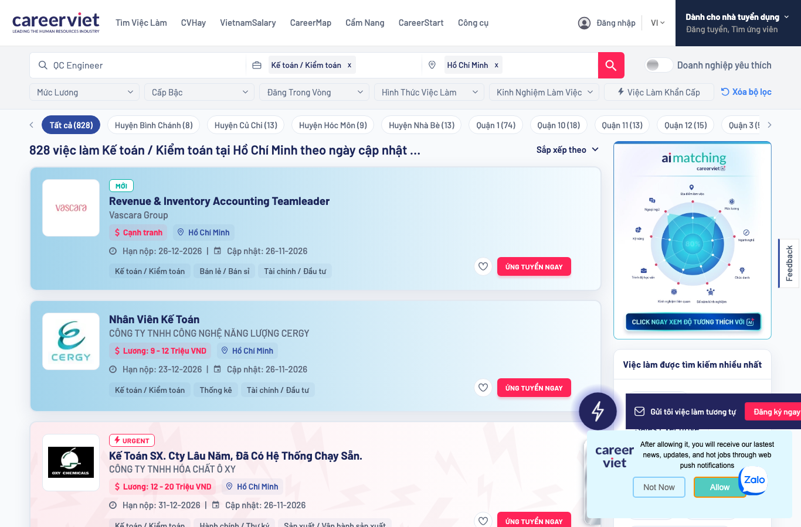
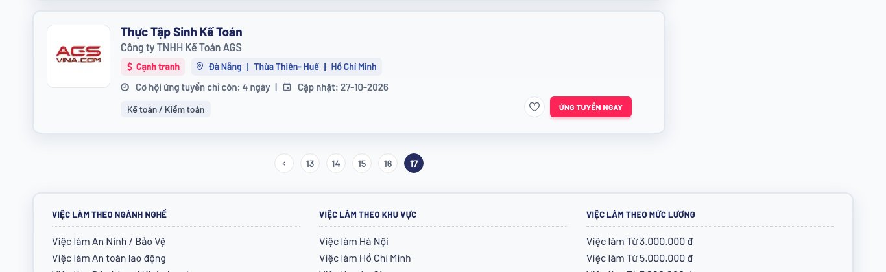
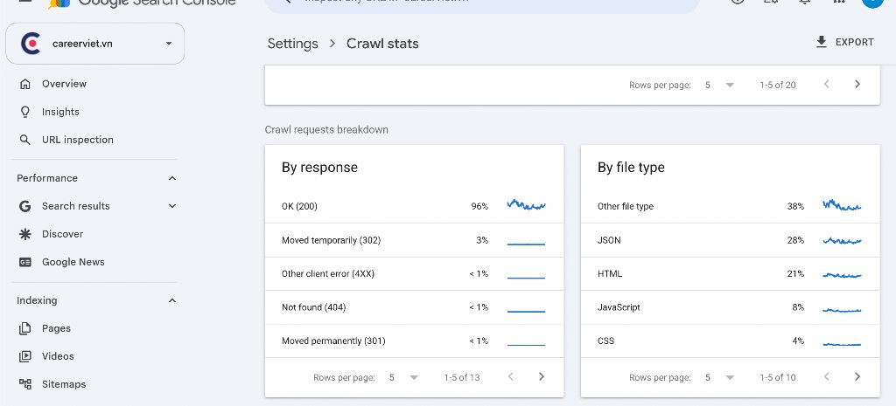

CareerViet: các lỗi kỹ thuật cần sửa trên trang Job Listing và toàn site
Tài liệu xếp các lỗi theo mức ảnh hưởng tới việc Google đọc và lập chỉ mục trang, lỗi nặng nhất ở trên. Mỗi lỗi có bốn phần: hiện trạng đo được, tác động, việc cần sửa và tiêu chí nghiệm thu mà đội Dev tự đo được bằng curl.
- Trang Job Listing nặng khoảng 4,1 MB. Googlebot chỉ xử lý 2 MB đầu, nên bản Google đang giữ của trang Kế toán tại Hồ Chí Minh không có thẻ H1 và không có tin tuyển dụng nào.
- Giảm dung lượng là chưa đủ. Sau khi trang nhẹ lại, Google sẽ đọc được phần thân trang và gặp các lỗi nằm sẵn ở đó: title, robots, canonical nằm ngoài
<head>, H1 thiếu tên ngành và tỉnh, phân trang không có link. - Các lỗi này cần đi chung một đợt sửa. Phần còn lại (robots.txt, không gian URL, schema, cache) xếp ở đợt 2 và đợt 3.
Cách đọc tài liệu và phạm vi đo
- P0 đang làm Google không đọc được nội dung chính. P1 làm Google đọc sai, tốn lượt crawl hoặc không tìm ra trang. P2 là lỗi nhỏ, sửa kèm khi chạm tới.
- Biểu tượng iVí dụ: di chuột hoặc bấm vào biểu tượng này để đọc phần giải thích thuật ngữ hoặc nguồn tài liệu. mở phần giải thích. Khung viền vàng "Cần bổ sung dữ liệu" đánh dấu chỗ GTV chưa đủ số liệu để kết luận, kèm việc cần làm để có số liệu đó.
- Khung có dấu + chứa số đo chi tiết và lệnh kiểm. Bấm để mở.
- Phép đo trực tiếp: ngày 26/11/2026, từ 11:54 đến 12:33 (giờ Việt Nam), tải HTML bằng
curlvới User-Agent của Googlebot Smartphone, từ một máy tại Việt Nam. Vị trí byte tính trên HTML đã giải nén, chỉ đếm thẻ nằm ngoài<script>. - Số liệu Google Search Console: báo cáo Crawl Stats khoảng 90 ngày tính đến 24/11/2026 và công cụ Kiểm tra URL ngày 26/11/2026 của property
careerviet.vn. - Giới hạn: GTV không có log máy chủ. Các phép đo dùng User-Agent giả lập, nên phản hồi mà Googlebot thật nhận có thể khác ở lớp cache. Mục 13 liệt kê từng điểm cần CareerViet xác nhận bằng log.
Bảng tổng hợp theo thứ tự ưu tiên
P01. HTML Job Listing nặng 4,1 MB, Google mất H1 và 50 tin
Hiện trạng
Trang mẫu: https://careerviet.vn/viec-lam/ke-toan-kiem-toan-tai-ho-chi-minh-c2l8-vi.html, nặng 4.146.104 byte (đo 11:54 và 12:32).
messages của next-intl (919 KB)
Khối SEO cuối trang, thẻ title
job_title_embed + job_tag_embed (2,08 MB, 50,3% file)
H1 ở byte 3.744.837, tin đầu ở 3.746.438
- Khối 1, vector: dữ liệu trang chứa 96 mảng số (50
job_title_embedvà 46job_tag_embed), mỗi mảng 1.024 số, tổng 2.083.718 byte. Giao diện không hiển thị hai trường này. - Khối 2, bảng dịch: layout gốc gửi toàn bộ bảng dịch của cả website xuống mọi trang, gồm chữ của các công cụ khác như CVHay, Danh thiếp, tính lương Gross-Net. Khối này nặng 919.024 byte, và tới khoảng 1,32 MB nếu tính cả các chuỗi bài viết dài đứng ngay trước.
- Bản Google đang giữ: công cụ Kiểm tra URL cho lần crawl 04:50 ngày 26/11 trả về bản HTML có 0 thẻ H1, 0/50 link tin tuyển dụng, 0 khối phân trang. Vùng danh sách tin chỉ là khung chờ tải.
- API cũng trả vector:
internal-api…/jobs/public?…limit=50trả 2,17 MB có 96 mảng vector.similar-jobstrả 452 KB có 20 mảng.

Dung lượng và vị trí H1 trên 12 mẫu trang
| Loại trang | URL (rút gọn) | Dung lượng (byte) | H1 ở byte | Tin đầu ở byte |
|---|---|---|---|---|
| Ngành × tỉnh | …tai-ho-chi-minh-c2l8-vi.html | 4.146.104 | 3.744.837 | 3.746.438 |
| Tỉnh | ho-chi-minh-l8-vi.html | 4.160.432 | 3.773.661 | 3.775.382 |
| Ngành | ke-toan-kiem-toan-c2-vi.html | 4.186.747 | 3.798.241 | 3.799.844 |
| Ngành | dau-khi-c26-vi.html | 4.028.602 | 3.658.800 | 3.660.341 |
| Quận/huyện | huyen-cu-chi-l8q1635-vi.html | 4.181.158 | 3.800.370 | 3.801.977 |
| Quận/huyện (23 tin) | thanh-pho-da-lat-l63q276-vi.html | 2.659.299 | 2.485.818 | 2.487.265 |
| Từ khoá | ke-toan-truong-k-vi.html | 4.151.029 | 3.777.155 | 3.779.100 |
| Từ khoá × tỉnh (40 tin) | duoc-si-tai-ho-chi-minh-kl8-vi.html | 3.591.257 | 3.288.943 | 3.290.491 |
| Công ty (25 tin) | masan-consumer-p35A4FED8-vi.html | 2.726.079 | 2.496.231 | 2.497.753 |
| Trang 2 | …c2l8-trang-2-vi.html | 3.962.854 | 3.576.427 | 3.577.881 |
| Tất cả việc làm | tat-ca-viec-lam-vi.html | 4.180.815 | 3.786.737 | 3.788.418 |
| Job Detail (để so) | …mice-mien-bac.35C8EB2B.html | 1.562.725 | 41.744 | không áp dụng |
Trang Job Detail không vượt 2 MB và không có vector, nhưng vẫn mang khối bảng dịch 919 KB, tức 59% dung lượng trang (xem mục 8).
Tác động
- Google không thấy tiêu đề trang và danh sách tin của Job Listing, nên trang chỉ còn phần chữ SEO cuối trang để xếp hạng.
- Job Listing không còn chuyển link nội bộ tới trang Job Detail.
- Trong Crawl Stats, HTML chiếm 21% số lượt crawl nhưng 68% dung lượng tải (10,7 TB trên 15,7 TB). Người dùng và các bot khác vẫn tải đủ 4,1 MB cho mỗi trang.
Việc cần sửa
- Bỏ hai trường vector khỏi phản hồi của API (
jobs/public,similar-jobs) và lọc thêm ở tầng lấy dữ liệu của Next.js trước khi truyền xuống Client Component. Trước khi bỏ, tìm trong mã nguồn xem có thành phần nào đọc hai trường này. - Không gửi cả bảng dịch xuống mọi trang. Ở layout gốc đặt
messages={null}rồi dùngpick()cho từng nhóm Client ComponentiĐây là cách tài liệu next-intl mô tả. Mặc địnhNextIntlClientProvidergửi mọi messages xuống client. Nếu chỉ loại vài namespace nặng, namespace thêm sau này sẽ lại làm trang phình ra. Xem tài liệu. Áp cho cả trang Job Detail. - Thêm bước kiểm dung lượng HTML vào CI để lỗi không quay lại.
Tiêu chí nghiệm thu
- 0 chuỗi
job_title_embed,job_tag_embedtrong HTML của 8 loại trang. - H1 và link tin đầu tiên nằm trước byte 800.000. Nếu tách cả các chuỗi bài viết dài (401 KB) thì trước byte 400.000.
- Link tin thứ 50 nằm trước byte 1.500.000.
- Job Detail dưới 700.000 byte.
- Kiểm tra URL (Test Live URL) của trang c2l8 có H1 và đủ 50 link tin trong HTML.
Chỉ làm việc 1 là chưa đủ. Bỏ vector đưa trang c2l8 về 2.062.386 byte, H1 về byte 1.661.119, nhưng 7 tin cuối (44 đến 50) vẫn nằm sau mốc 2 MB. Sau khi làm thêm việc 2, trang còn khoảng 0,74 đến 1,14 MB.
Lệnh tự kiểm cho đội Dev
UA='Mozilla/5.0 (Linux; Android 6.0.1; Nexus 5X Build/MMB29P) AppleWebKit/537.36 (KHTML, like Gecko) Chrome/141.0.0.0 Mobile Safari/537.36 (compatible; Googlebot/2.1; +http://www.google.com/bot.html)'
URL='https://careerviet.vn/viec-lam/ke-toan-kiem-toan-tai-ho-chi-minh-c2l8-vi.html'
curl -s --compressed -A "$UA" "$URL" -o page.html
wc -c page.html # dung lượng đã giải nén
LC_ALL=C grep -c 'job_title_embed' page.html # phải bằng 0
LC_ALL=C grep -ob '</head>' page.html | head -1 # vị trí đóng head
LC_ALL=C grep -ob '<title' page.html | head -1 # phải nhỏ hơn vị trí </head>
LC_ALL=C grep -ob '<h1' page.html | head -1 # phải nhỏ hơn 800000Lưu ý: grep -ob đếm cả chuỗi nằm trong <script>. Với H1 và title, kết quả đầu tiên hiện là thẻ thật vì dữ liệu trong script đã được mã hoá ký tự.
Ghi chú về con số "2 MB"
Tài liệu Google ghi "2MB" và không nêu số byte chính xác. Bản HTML mà Search Console lưu cho lần crawl 04:50 dài 2.023.050 byte: đó là HTML sau khi Google phân tích, có thêm khoảng 10,6 KB thẻ ở <head> và 18,5 KB script do Tag Manager chèn ở cuối. Dữ liệu gốc dừng giữa mảng vector của tin thứ 11. Quy về file gốc, điểm dừng nằm quanh byte 1.994.000. Tài liệu này dùng mốc 2.000.000 byte và đặt tiêu chí nghiệm thu thấp hơn hẳn mốc đó.
P02. Title, robots, canonical, hreflang nằm ngoài <head>
<head>. Máy chủ gửi chúng vào giữa hoặc cuối <body>, vị trí đổi theo từng lần tạo trang, có lần nằm sau mốc 2 MB. Lỗi này tách khỏi lỗi dung lượng ở mục 1 và không tự hết khi trang nhẹ lại.Hiện trạng
Thẻ </head> đóng ở byte 10.415. Vị trí thẻ <title> đo được:
| Trang | Giờ đo 26/11 | Dung lượng | <title> ở byte | Nhận xét |
|---|---|---|---|---|
Tỉnh l8, ngành c2, từ khoá -k | 11:54 | 4,0–4,2 MB | khoảng 10.290 | Trong <head> ở các lần đo này |
Công ty -p (Masan) | 11:54 · 12:03 | 2,6–2,7 MB | 10.289 · 1.479.006 | Lần đầu trong <head>, lần sau trong <body> |
Ngành × tỉnh c2l8 | 11:54, 12:32 | 4.146.104 | 1.553.283 | Trong <body> |
Ngành × tỉnh c2l8 | 12:12 | 4.146.059 | 4.141.894 | Cuối file, sau mốc 2 MB |
Quận l63q276 (Đà Lạt) | 11:54 | 2.659.299 | 2.479.818 | Sau mốc 2 MB |
Quận l63q276 (Đà Lạt) | 12:32 | 2.659.198 | 2.655.238 | Cuối file, sau mốc 2 MB |
Quận l8q1635 (Củ Chi) | 11:54 | 4.181.158 | 1.522.602 | Trong <body> |
Từ khoá × tỉnh kl8 | 11:55 | 3.591.257 | 1.556.638 | Trong <body> |
Trang 2 của c2l8 | 12:32 | 3.962.615 | 1.479.830 | Trong <body> |
Trang 17 của c2l8 | 12:05 | 2.755.314 | 2.751.113 | Sau mốc 2 MB |
- Thẻ
meta robots,link canonicalvà 3 thẻhreflangluôn đi liền sau<title>, nên cùng chung vị trí. - Trong bản HTML mà Search Console lưu cho trang c2l8 (lần crawl 04:50), title nằm ở byte 1.563.423 và canonical ở 1.564.330, đều sau
</head>. - Sau khi chạy JavaScript trên Chrome, thẻ title của c2l8 vẫn nằm trong
<body>(byte 2.007.790 của DOM). - Cùng một URL có thể cho kết quả khác nhau giữa hai lần đo. Vì vậy loại trang nào dùng chung route Job Listing cũng cần kiểm.
Vì sao có hiện tượng này
Next.js từ bản 15.2 có tính năng "streaming metadata": khi generateMetadata chưa xong lúc bắt đầu gửi trang, các thẻ metadata được gửi sau và gắn vào <body>iTài liệu Next.js: "When generateMetadata resolves, the resulting metadata tags are appended to the <body> tag." Next.js chỉ đưa metadata về <head> cho các bot trong danh sách htmlLimitedBots. Xem tài liệu. Googlebot không nằm trong danh sách bot mặc định được nhận metadata trong <head>.
Phép thử đối chứng: cùng URL quận, gọi bằng User-Agent facebookexternalhit (có trong danh sách mặc định) thì title nằm trong <head> ở byte 10.290, 2 trên 2 lần.
Tài liệu Next.js ghi rằng Googlebot chạy JavaScript và đọc được metadata gắn vào <body>. Điều đó chỉ đúng khi cả file tới được bước render. Ở đây các thẻ nằm sau mốc 2 MB trong nhiều lần đo, tức phần Google không xử lý. Với canonical và hreflang, tài liệu của Google yêu cầu thẻ nằm trong <head>.
Lớp cache dành cho bot (header X-Bot-Cache) lưu nguyên bản của lần tạo trang đầu và phát lại cho mọi bot tới khi hết hạn. Một lần tạo trang có metadata nằm cuối file vì vậy được phát lại nhiều lần.
Tác động
- Google chỉ nhận thẻ canonical khi thẻ nằm trong
<head>iTài liệu Google: "The rel="canonical" link element is only accepted if it appears in the <head> section of the HTML." Thẻ hreflang cũng được yêu cầu nằm trong <head>. Xem tài liệu. Theo tài liệu này, canonical của trang 2, trang sort, URL trùng có thể không được tính, và các bản trùng không gộp tín hiệu về trang gốc. Cần xác nhận bằng dòng "User-declared canonical" trên Search Console (khung vàng bên dưới). - Lần nào các thẻ rơi sau mốc 2 MB, Google không thấy title, robots, canonical và hreflang của trang đó.
- Trang quận Đà Lạt đang bị Search Console báo "Excluded by 'noindex' tag" dù trang hiện khai
index, follow(mục 5). GTV chưa chứng minh được hai việc này liên quan, nhưng đây là giả thuyết cần loại trừ đầu tiên.
Việc cần sửa
- Trong
next.config, thêm Googlebot và các bot tìm kiếm vàohtmlLimitedBotsiCấu hình này nhận một biểu thức chính quy khớp User-Agent. Đặt/.*/để tắt streaming metadata cho mọi trình duyệt; cách này có thể làm chậm byte đầu tiên, nên đo TTFB trước và sau. Xem tài liệu, hoặc bỏ lệnh chờ chậm tronggenerateMetadatacủa route Job Listing. - Lớp cache cho bot chỉ lưu bản có
<title>đứng trước</head>.
Tiêu chí nghiệm thu
- Với User-Agent Googlebot Smartphone, trên 8 loại trang, mỗi trang gọi 5 lần (cả lúc
X-Bot-Cachelà MISS và HIT): vị trí của<title>,meta robots,link canonicalvà 3hreflangđều nhỏ hơn vị trí</head>và nhỏ hơn 20.000. - Kiểm tra URL của trang c2l8 hiện đúng URL ở dòng "User-declared canonical".
<body>. Việc này mất khoảng 2 phút trên Search Console.P13. H1 trong HTML máy chủ thiếu ngành, tỉnh, quận và ngày cập nhật
<div class="job-found-amout">
<h1>828 việc làm theo ngày cập nhật mới nhất</h1>
</div><h1>828 việc làm Kế toán / Kiểm toán tại
Hồ Chí Minh mới nhất ngày 26/11/2026</h1>
Mẫu H1 đề xuất
{số tin} việc làm {từ khoá} {ngành} {cấp bậc / tiêu chí} tại {quận} - {tỉnh} mới nhất ngày {dd/mm/yyyy}Ví dụ: 40 việc làm Dược sĩ tại Hồ Chí Minh mới nhất ngày 26/11/2026.
- Thành phần: trang không có thành phần nào thì bỏ thành phần đó và từ nối đi kèm. Trang tỉnh: "6.373 việc làm tại Hồ Chí Minh mới nhất ngày 26/11/2026". Trang ngành: "72 việc làm Dầu khí mới nhất ngày 26/11/2026".
- Số tin: lấy từ cùng biến với title và meta description, để ba nơi cùng một số (mục 11). Viết dấu chấm ngăn hàng nghìn theo cách viết tiếng Việt: "6.373". Hiện site viết "6,373" ở cả H1, title và meta description.
- Ngày: ngày dựng danh sách tin theo giờ Việt Nam, dạng dd/mm/yyyy đủ hai chữ số. H1 dùng cùng ngày với title. Title giữ mẫu đã thống nhất "… MỚI dd/mm/yyyy", ví dụ "MỚI 26/11/2026". Hiện chỉ trang tỉnh, ngành, từ khoá đúng mẫu này. Trang ngành × tỉnh, quận, từ khoá × tỉnh, công ty và trang 2 trở đi đang ghi "MỚI 11/2026", thiếu ngày.
- Quận/huyện: ghi kèm tỉnh, nối bằng dấu gạch: "tại Củ Chi - Hồ Chí Minh".
- Bỏ cụm "theo ngày cập nhật mới nhất". Cụm này là tên kiểu sắp xếp, và H1 mới đã có "mới nhất ngày …".
- Trang 2 trở đi: thêm " - Trang N" vào cuối H1 và title (mục 4). Trang sort (
-sortdv,-sortlg,-sortscore): dùng cùng H1 với bản gốc. - Tiếng Anh: "{số tin} {ngành} jobs in {tỉnh}, updated {dd/mm/yyyy}".
H1 đang có và H1 đề xuất trên 14 loại trang
| Loại trang | H1 trong HTML máy chủ (đo 26/11) | H1 đề xuất |
|---|---|---|
Ngành × tỉnh c2l8 | 828 việc làm theo ngày cập nhật mới nhất | 828 việc làm Kế toán / Kiểm toán tại Hồ Chí Minh mới nhất ngày 26/11/2026 |
Tỉnh l8 | 6,373 việc làm theo ngày cập nhật mới nhất | 6.373 việc làm tại Hồ Chí Minh mới nhất ngày 26/11/2026 |
Tỉnh l4 | 4,432 việc làm theo ngày cập nhật mới nhất | 4.432 việc làm tại Hà Nội mới nhất ngày 26/11/2026 |
Quận l8q1635 | 153 việc làm theo ngày cập nhật mới nhất | 153 việc làm tại Củ Chi - Hồ Chí Minh mới nhất ngày 26/11/2026 |
Quận l63q276 | 23 việc làm theo ngày cập nhật mới nhất | 23 việc làm tại Đà Lạt - Lâm Đồng mới nhất ngày 26/11/2026 |
Ngành c2 | 1,777 việc làm theo ngày cập nhật mới nhất | 1.777 việc làm Kế toán / Kiểm toán mới nhất ngày 26/11/2026 |
Ngành c26 | 72 việc làm theo ngày cập nhật mới nhất | 72 việc làm Dầu khí mới nhất ngày 26/11/2026 |
Ngành × cấp bậc c2e3 | 1,368 việc làm theo ngày cập nhật mới nhất | 1.368 việc làm Kế toán / Kiểm toán cấp Nhân viên mới nhất ngày 26/11/2026 |
Hai ngành c2,19 | 4,721 việc làm theo ngày cập nhật mới nhất | 4.721 việc làm Kế toán / Kiểm toán, Ngân hàng mới nhất ngày 26/11/2026 |
Từ khoá × tỉnh kl8 | 40 việc làm Dược sĩ | 40 việc làm Dược sĩ tại Hồ Chí Minh mới nhất ngày 26/11/2026 |
Từ khoá × ngành kc19 | 63 việc làm Kế toán trưởng | 63 việc làm Kế toán trưởng ngành Ngân hàng mới nhất ngày 26/11/2026 |
Từ khoá -k | 755 việc làm Kế toán trưởng | 755 việc làm Kế toán trưởng mới nhất ngày 26/11/2026 |
Công ty -p | Tuyển dụng 25 việc làm tại Masan Consumer MỚI 11/2026 | 25 việc làm tại Masan Consumer mới nhất ngày 26/11/2026 |
Tiếng Anh c2l8 | 828 jobs base on the update date | 828 Accounting / Auditing jobs in Ho Chi Minh City, updated 26/11/2026 |
Số tin trong cột đề xuất lấy theo H1 lúc đo. Cùng lúc đó title trang -k ghi 760 và trang kc19 ghi 66. Sau khi sửa, H1 và title dùng chung một số.
Tác động
H1 là một trong các nguồn Google dùng để tạo tiêu đề hiển thị trên kết quả tìm kiếm và để hiểu chủ đề trangiTài liệu Google về title link: Google dùng nhiều nguồn, trong đó có "the main visual title, heading elements", và khuyên đặt tên trang trong thẻ H1 đầu tiên nhìn thấy được. Xem tài liệu. H1 giống nhau giữa mọi trang ngành, tỉnh, quận làm các trang này khó phân biệt với nhau.
Việc cần sửa
- Dựng H1 ở máy chủ theo mẫu trên, cho mọi loại Job Listing, gồm cả trang từ khoá và trang công ty.
- Lấy thực thể (ngành, tỉnh, quận, cấp bậc, từ khoá), số tin và ngày từ cùng nguồn với
<title>. - Client không ghi đè H1 bằng nội dung khác.
- Viết số tin có dấu chấm ngăn hàng nghìn ("6.373", không viết "6,373") ở H1,
<title>và meta description. - Title của mọi loại Job Listing ghi đủ ngày theo mẫu "MỚI dd/mm/yyyy". Sửa các trang đang ghi "MỚI 11/2026": ngành × tỉnh, quận, từ khoá × tỉnh, công ty, trang 2 trở đi.
Tiêu chí nghiệm thu
- Trên 14 loại trang ở bảng trên, H1 trong HTML
curltheo đúng mẫu ở cột "H1 đề xuất" và kết thúc bằng "mới nhất ngày dd/mm/yyyy" (bản tiếng Anh: "updated dd/mm/yyyy"). - Số tin và ngày trong H1 trùng với
<title>trên cùng một lần tải. - H1, title, meta description không còn số viết dấu phẩy ngăn hàng nghìn (ví dụ "6,373").
- Title của 14 loại trang có "MỚI dd/mm/yyyy" đủ ngày, tháng, năm.
- H1 trước và sau khi JavaScript chạy giống nhau.
- Console không báo lỗi hydration ở H1.
P14. Phân trang không có link, trang N khai là bản trùng trang 1
<a> không có href, cả trong HTML máy chủ và sau khi JavaScript chạy. Google chỉ đi theo thẻ <a> có hrefiTài liệu Google: "Generally, Google can only crawl your link if it's an <a> HTML element with an href attribute." và "Google's crawlers don't click buttons". Xem tài liệu. Trang c2l8 có 828 tin nhưng Job Listing chỉ dẫn link tới 50 tin.<div class="pagination"><ul>
<li class="active">
<a tabindex="0" role="button">1</a></li>
<li><a role="button" tabindex="0">2</a></li>
<li><a role="button" tabindex="0">3</a></li>
</ul></div><nav class="pagination"><ul>
<li class="active"><a aria-current="page"
href="/viec-lam/…-c2l8-vi.html">1</a></li>
<li><a href="/viec-lam/…-c2l8-trang-2-vi.html">2</a></li>
<li><a href="/viec-lam/…-c2l8-trang-3-vi.html">3</a></li>
</ul></nav>
Hiện trạng trên ba URL mẫu của c2l8
| URL | Mã trả về | Số tin | Canonical | Robots | Title và H1 |
|---|---|---|---|---|---|
…-c2l8-trang-2-vi.html | 200 | 50, không trùng tin nào với trang 1 | Trỏ về trang 1 | index, follow | Giống hệt trang 1 |
…-c2l8-trang-17-vi.html (trang cuối) | 200 | 28 | Trỏ về trang 1 | index, follow | Giống hệt trang 1 |
…-c2l8-trang-999-vi.html (không tồn tại) | 200 | 0 | Trỏ về trang 1 | index, follow | H1 vẫn ghi "828 việc làm…" |
Không trang nào có rel="next" hay rel="prev". Google không còn dùng hai thẻ này, nên không cần thêm.
Tác động
- Googlebot không có đường HTML nào từ trang 1 sang trang 2. Với c2l8, 778 trên 828 tin (94%) không nhận link nội bộ từ Job Listing. Google hiện tìm các tin này qua sitemap tin tuyển dụng: 128 trên 128 mã tin GTV lấy mẫu có trong sitemap.
- Trang 2 trở đi tự khai là bản trùng của trang 1 dù nội dung khác. Google khuyên mỗi trang trong chuỗi phân trang có canonical riêngiTài liệu Google: "Don't use the first page of a paginated sequence as the canonical page. Instead, give each page its own canonical URL." Các trang trong chuỗi được phép dùng chung title và description. Xem tài liệu.
- Số trang vượt giới hạn trả 200 và cho index, tạo trang rỗng nặng 1,49 MB.
- Trong mẫu URL của Crawl Stats, khoảng 5,7% URL HTML là trang phân trang, sâu nhất tới trang 22. Googlebot vẫn tải các URL này dù chúng tự khai là bản trùng.
Việc cần sửa
- Render
<a href>thật cho từng số trang và nút trước, sau, ngay trong HTML máy chủ. - Trang N có canonical trỏ về chính nó. Title và H1 thêm "Trang N".
- N lớn hơn tổng số trang: trả 404.
Tiêu chí nghiệm thu
curltrang c2l8 có ít nhất 5 thẻ<a href>khớp-trang-\d+-vi.html.- Trang
-trang-2có canonical bằng chính URL của nó. - Trang
-trang-999trả 404.
So với khuyến nghị GTV gửi ngày 12/06/2026 (mục 18 của bảng audit, "Googlebot crawl và indexing chuỗi phân trang"): khuyến nghị khi đó là canonical tự trỏ cho chuỗi phân trang và noindex từ trang 5. Phần canonical tự trỏ giữ nguyên. Hiện trạng đo ngày 26/11 là canonical về trang 1, cần sửa lại. Phần noindex từ trang 5 có thể giữ, miễn là các trang đó vẫn có <a href> và tin vẫn có trong sitemap.
Về lượt crawl: thêm href cho phân trang làm Google crawl trang 2 trở đi nhiều hơn. Với trang ngành, tỉnh, quận, công ty thì đây là điều cần có. Với trang từ khoá -k, nên xử lý mục 6 trước (trả 404 cho trang rỗng, chuẩn hoá URL) rồi mới mở link phân trang.
Lưu ý khi viết rule: dùng biểu thức -(trang|page)-\d+-(vi|en)\.html$. Chuỗi -trang- đơn thuần khớp nhầm các URL như thoi-trang, soc-trang, trang-bom. Bản tiếng Anh dùng -page-N.
P15. Trang quận/huyện và ngành × tỉnh thiếu đường vào
Hiện trạng
- Chip quận/huyện không có
href. HTML máy chủ của trang tỉnh (l8,l4) có 0 link tới trang quận. Sau khi JavaScript chạy, trangl8có 23 chip dạng<a>Huyện Củ Chi (153)</a>, không chip nào cóhref. Chuyển khối này sang render ở máy chủ là chưa đủ, cần thêmhref. - Sitemap Job Listing chỉ có 314 URL. File
/sitemap/searchjob.xmlgồm 121 tỉnh, 25 ngành, 7 cấp bậc, 4 mốc ngày đăng, mỗi loại hai ngôn ngữ. File có 0 URL quận/huyện và 0 URL ngành × tỉnh. Trang c2l8 và trang Đà Lạt đều không có trong 10 trên 13 file sitemap GTV đã tải. - File
searchjob_custom.xmllại nộp 510 URL từ khoá (-k,-kl) và 92 trang công ty. - Khối "Việc làm được tìm kiếm nhiều nhất" rỗng trong HTML máy chủ (
<ul></ul>), 10 link chỉ có sau khi JavaScript chạy.
Ca trang Đà Lạt

thanh-pho-da-lat-l63q276-vi.html: "URL is not on Google", "Excluded by 'noindex' tag", "No referring sitemaps detected". Các trang dẫn tới chỉ là bài blog.- Lần crawl cuối: 31/10/2026 lúc 14:08. Ở lần đó Google ghi nhận
noindextrong thẻ meta robots. - Ngày 26/11, trang trả
index, follow, có 23 tin và canonical tự trỏ. Nhưng title, robots, canonical nằm ở byte 2,48 đến 2,66 triệu, sau mốc 2 MB (mục 2). - Ngày 31/10 là ngày Google thấy
noindexlần cuối. Ảnh không cho biếtnoindexbắt đầu từ ngày nào.
noindex theo số tin hay không.Việc cần sửa
- Render khối quận/huyện ở máy chủ với
<a href>thật tới URL quận, không kèm tham số sort. - Thêm sitemap cho trang quận/huyện và ngành × tỉnh có số tin từ ngưỡng hai bên thống nhất.
- Bỏ các URL lọc theo ngày đăng khỏi sitemap. Rà lại danh sách URL từ khoá trong
searchjob_custom.xml. - Render 10 link của khối "tìm kiếm nhiều nhất" ở máy chủ.
Tiêu chí nghiệm thu
curltrangl8có ít nhất 22 thẻ<a href>khớp-l8q\d+-vi.html.- Sitemap chứa URL c2l8 và URL Đà Lạt.
- Kiểm tra URL của hai trang này hiện tên sitemap ở dòng "Sitemaps" sau lần crawl kế tiếp.
P16. URL không có nội dung vẫn trả 200 và cho index
index, follow và canonical tự trỏ. Số URL có thể được index vì vậy không có giới hạn, mỗi URL nặng 1,2 đến 1,5 MB.| Trường hợp | URL mẫu | Kết quả đo 26/11 | Cần trả về |
|---|---|---|---|
| Từ khoá không có tin | /viec-lam/zzqqxxyy-khong-ton-tai-k-vi.html | 200, index, follow, title "Tuyển dụng 0 việc làm…", không có H1, 1.484.811 byte | 404, hoặc noindex kèm trang nhẹ |
| Mã ngành không tồn tại | /viec-lam/khong-ton-tai-zzqx-c99999-vi.html | 200, index, follow, title "CareerViet - Jobseeker", 1.482.180 byte | 404 |
| Từ khoá × địa điểm nước ngoài | /viec-lam/…-tai-tokyo-kl1001-vi.html | 7 trên 7 URL mẫu: "0 việc làm", index, follow, 1,23–1,54 MB | 404, hoặc noindex |
| URL có dấu, chữ hoa | /viec-lam/Kế-toán-trưởng-k-vi.html | 200, canonical tự trỏ về bản có dấu, 756 tin (bản chuẩn ghi 760) | 301 về ke-toan-truong-k-vi.html |
| Tên công ty tuỳ ý trước mã | /viec-lam/abc-xyz-p35A4FED8-vi.html | 200, index, follow, canonical nhại lại abc-xyz | 301 về tên chuẩn theo mã công ty |
| Đường dẫn không tồn tại | /khong-ton-tai-zzqx-12345 | 200, noindex, nofollow, thân trang báo "không tìm thấy trang", 1.433.818 byte | 404, trang dưới 100 KB |
Đuôi .HTML viết hoa | …-c2l8-vi.HTML | 200, noindex, nofollow, canonical về trang chủ | 301 hoặc 404 |
Các nơi trên site đang tạo ra link tới URL lỗi
- Footer của mọi Job Listing có 5 link tới URL có dấu và chữ hoa, ví dụ
/viec-lam/Thi%E1%BA%BFt-k%E1%BA%BF-n%E1%BB%99i-th%E1%BA%A5t-k-vi.html. - Công cụ tự gắn link trong khối chữ SEO tạo link dạng
/viec-lam/Củ-Chi-k-vi.html. Trang c2 có 17 link loại này, trang c2l8 có 10. - Mỗi trang Job Detail có link thẻ tag dùng nguyên tiêu đề tin, ví dụ
/viec-lam/nhan-vien-sales-admin-trung-tam-mice-mien-bac-k-vi.html. - Breadcrumb trong JSON-LD của Job Detail cắt tiêu đề tin để tạo URL từ khoá (mục 10).
- Trang công ty Masan link tới 5 tên khác nhau của cùng một mã nhà tuyển dụng, 16 trên 50 link đi qua chuyển hướng 307.
Tác động
- Trong mẫu 997 URL HTML của Crawl Stats, 492 URL (49,3%) là trang từ khoá tiếng Việt và tiếng Anh, 91 URL (9,1%) là trang từ khoá gắn mã địa điểm nước ngoài. Trang ngành, tỉnh, quận sạch chỉ chiếm 0,5–1,6%iDanh sách URL trong Crawl Stats là ví dụ, tối đa khoảng 1.000 dòng cho mỗi loại file và không có trọng số theo số lượt crawl. Các tỷ lệ này mô tả mẫu, không quy được ra số lượt crawl thật. Xem tài liệu.
- Trang 200 có thân báo lỗi là soft 404. Google tiếp tục crawl các trang nàyiTài liệu Google về crawl budget: "soft 404 pages will continue to be crawled, and waste your budget." Xem tài liệu.
- Bản có dấu và bản không dấu của cùng một từ khoá cạnh tranh nhau.
Việc cần sửa
- Trang từ khoá có 0 tin, mã ngành/tỉnh/quận không có trong cơ sở dữ liệu: trả 404.
- Chuẩn hoá tên trong URL: chữ thường, không dấu, chỉ
a-z 0-9 -. Biến thể khác chuyển hướng 301 về bản chuẩn. - Trang công ty: chốt một tên chuẩn theo mã, tên khác 301 về tên chuẩn.
- Route "không tìm thấy" trả mã 404 và trang nhẹ, không kèm bảng dịch.
- Sửa 5 link footer và công cụ tự gắn link để chỉ trỏ tới URL chuẩn.
Tiêu chí nghiệm thu
- 7 URL mẫu ở bảng trên trả đúng mã ở cột "Cần trả về".
curltrang c2 và c2l8 có 0hrefchứa ký tự có dấu,%XXhoặc chữ hoa trong phần tên URL từ khoá.
P17. robots.txt không có hiệu lực với Googlebot
robots.txt có 21 dòng Disallow trong nhóm User-agent: *, nhưng Googlebot có nhóm riêng chỉ ghi Allow: /. Google chỉ áp một nhóm khớp nhất và không gộp với nhóm *iTài liệu Google: "Only one group is valid for a particular crawler… User agent specific groups and global groups (*) are not combined." RFC 9309 mục 2.2.1 quy định tương tự. Xem tài liệu. Kết quả: Googlebot được crawl mọi đường dẫn.Hiện trạng
User-agent: Googlebot # dòng 1–2, tương tự cho Bingbot, GPTBot, ClaudeBot… (10 nhóm)
Allow: /
User-agent: * # dòng 33
Disallow: /vi/tim-ung-vien # 21 dòng Disallow, Googlebot không đọc nhóm này
Disallow: /api/*
…- File dài 56 dòng, sửa lần cuối 20/11/2026. GTV chạy 47 URL mẫu qua bộ kiểm theo luật của Google: 47 trên 47 URL được phép với Googlebot.
internal-api.careerviet.vn,images.careerviet.vn,static.careerviet.vnkhông córobots.txt(trả 404), nên Google được crawl hết. Mỗi tên miền con cần file riêng.- Bằng chứng trên Search Console: khi render trang c2l8, Googlebot tải
/api/get-localized-url. Trong mẫu Crawl Stats có 2,3% URL HTML thuộc/vi/tim-ung-vien/, đường dẫn đã ghiDisallow.

Googlebot đang tải những gì ngoài trang nội dung
| Nhóm URL | Tỷ lệ trong mẫu Crawl Stats | Đo trực tiếp 26/11 |
|---|---|---|
?_rsc=… (dữ liệu chuyển trang của Next.js) | 703 trên 994 URL mẫu nhóm Other (70,7%) | Với User-Agent Googlebot, URL có _rsc trả về nội dung trang chủ: 200, 1,6 MB, canonical về /. Trình duyệt thường nhận đúng trang. |
/api/get-localized-url, /api/title-keywords | 46,3% và 13,8% mẫu JSON | 200, không có X-Robots-Tag |
internal-api…/count-by-district, similar-jobs, count-views | 39,4% mẫu JSON | 200, JSON |
/vi/employers/login?referrer=…, /vi/jobseekers/login?referrer=… | 163 trên 997 URL mẫu HTML (16,3%) | 200, 967 KB, index, follow |
/vi/jobseekers/jobs/apply?job_id=… | 0,9% mẫu HTML | 200, 1,46 MB, index, follow, canonical tự trỏ. Mỗi Job Listing có 50 link tới URL loại này. |
_rsc, login, API chiếm bao nhiêu lượt crawl thật, cần log máy chủ 30 ngày lọc theo Googlebot (xác minh IP), đếm theo nhóm URL. Cũng cần log để xác nhận Googlebot thật có nhận nội dung trang chủ ở URL _rsc hay không.Việc cần sửa, theo thứ tự
- Trước khi đổi robots.txt: thêm
noindexcho trang login có?referrer=và trang apply, rồi chờ Google crawl lại và ghi nhậnnoindex(xem báo cáo Pages trên Search Console). Nếu chặn bằng robots ngay khi trang còn khaiindex, follow, các URL đã index sẽ không được gỡ. - Quyết định về 192 URL tìm hồ sơ ứng viên (
/vi/tim-ung-vien/,/en/resume-search/). Các URL này đang nằm trong sitemapsearchresume.xml, khaiindex, follow, và cũng nằm trongDisallow. Nếu không cần index: gỡ file sitemap này. Nếu cần: bỏ 2 dòngDisallow. - Gỡ nhóm
User-agent: Googlebotvà các nhóm chỉ cóAllow: /để bot dùng nhóm*. Giữ 6 nhóm đang chặn hẳn (CCBot, Bytespider…). Các bot AI như GPTBot, ClaudeBot vẫn được crawl nội dung vì nhóm*không chặn trang nội dung. - Thêm vào nhóm
*:Disallow: /*_rsc= Disallow: /vi/employers/login Disallow: /en/employers/login Disallow: /vi/jobseekers/login Disallow: /en/jobseekers/login Disallow: /vi/jobseekers/jobs/apply Disallow: /en/jobseekers/jobs/apply Allow: /api/keyword-display Allow: /api/title-keywords/*_rsc=khớp cả?_rsc=và&_rsc=. Hai dòngAllowđã khớp cả URL có tham số, không cần thêm dấu*. - Thử trên staging trước khi áp: với
/api/*bị chặn, trang còn render đủ cho Googlebot hay không. Trên Search Console, Googlebot hiện tải/api/get-localized-urlkhi render. - Không chặn
/jobs/. Đây là đường dẫn Job Listing tiếng Anh. - Tạo
robots.txtchointernal-api.careerviet.vn: chặncount-views,hr-centrals,captcha. Giữ mởcount-by-districtvàsimilar-jobstới khi hai khối này được render ở máy chủ. - Sửa ở gốc: nút "Ứng tuyển ngay" trên Job Listing dùng
<button>hoặc thêmrel="nofollow". Xem lại việc lớp bot trả trang chủ cho URL có_rsc.
Tiêu chí nghiệm thu
- Báo cáo robots.txt trên Search Console (Settings) hiện bản mới, không lỗi. Kiểm tra URL (Test Live URL) ghi "Crawl allowed? No" cho URL mẫu của
_rsc, login, apply, và "Yes" cho Job Listing tiếng Việt, tiếng Anh, Job Detail. - Test Live URL của trang c2l8 không có tài nguyên
/_next/static/hay/_next/imagenào bị robots chặn. - 0 URL trong sitemap bị robots chặn.
- Sau 14 ngày, số lượt crawl nhóm "Other file type" và JSON trong Crawl Stats giảm so với mốc 24/11.
Lưu ý: chặn robots giảm lượt crawl vào URL thừa. Google không cam kết chuyển số lượt đó sang trang kháciTài liệu Google: "Google won't shift this newly available crawl budget to other pages unless Google is already hitting your site's crawl capacity limit." Xem tài liệu, nên tiêu chí nghiệm thu đo trên lượt crawl URL thừa.
P18. Thời gian phản hồi HTML 1.090 ms, cache cho bot hết hạn nhanh

Hiện trạng
| Hạng mục | Đo được 26/11 |
|---|---|
Cache cho bot (X-Bot-Cache) | Trúng cache: byte đầu sau 15–26 ms. Không trúng: 190 ms đến 2,3 giây, cả trang c2l8 mất 1,35–2,44 giây. |
| Thời hạn cache | Bản lưu của c2l8 tạo lúc 11:54 còn dùng lúc 12:01, hết lúc 12:07. Không có header Age. |
| Cache nhận cả URL rỗng | Trang -trang-999, trang sort, trang 0 kết quả đều được đưa vào cache. |
| Kiểm tra thay đổi (304) | Job Listing và Job Detail không có ETag hay Last-Modified, nên không thể trả 304. Trang chủ có và trả 304. |
| Giao thức và nén | careerviet.vn chạy HTTP/1.1 với gzip. assets.careerviet.vn đã chạy HTTP/2 với Brotli và cache 30 ngày. |
| Bảng dịch trên Job Detail | 919.024 byte trên trang 1,56 MB (59%), có trên cả tin đã hết hạn. |
Header Link | 4–6 KB preload font và CSS trên mỗi phản hồi HTML (34–52 mục). |
Tác động
Google tăng hoặc giảm tốc độ crawl theo độ ổn định và thời gian phản hồi của máy chủ. Google không công bố ngưỡng cụ thể, nên tài liệu này lấy mốc hiện tại 1.090 ms làm điểm so sánh.
Việc cần sửa
- Giảm dung lượng HTML theo mục 1. Đây là phần lớn thời gian tải khi không trúng cache.
- Kéo dài thời hạn cache cho Job Listing và Job Detail, làm mới khi có tin mới. Thêm header
Age. - Không lưu cache cho trang rỗng, trang vượt số trang, trang sort.
- Thêm
ETaghoặcLast-Modifiedcho Job Listing và Job Detail. - Bật HTTP/2 và Brotli trên Kong/OpenResty. Nén thử cho thấy Brotli giảm 23–25% dung lượng truyền của Job Listing so với gzip.
Tiêu chí nghiệm thu
- Gọi 20 URL Job Listing hai lần cách nhau 10 phút: lần 2 có
X-Bot-Cache: HITở ít nhất 19 URL. If-None-Matchtrên Job Listing trả 304.- Thời gian phản hồi trung bình của HTML trong Crawl Stats giảm so với 1.090 ms sau 28 ngày.
RSC, cần DevOps xác nhận trước khi kéo dài thời hạn.P19. Schema JobPosting và bản tiếng Anh của trang tin
| Trường | Đang xuất | Tỷ lệ trong mẫu | Cần xuất |
|---|---|---|---|
employmentType | ["\"FULL_TIME\""] (có thêm dấu ngoặc kép bên trong) | 18 trên 18 | ["FULL_TIME"], một trong 8 giá trị Google nhận |
datePosted | Ngày làm mới tin. Ví dụ tin 35C8D231: đăng 05/11, schema ghi 25/11 | 4 trên 6 tin so được lệch 6–41 ngày | Ngày nhà tuyển dụng đăng tin lần đầu |
jobLocation.address | addressLocality = tên tỉnh, addressRegion = tên quận. Tin không có địa chỉ: cả ba trường đều ghi tên tỉnh | 8 trên 12 đảo cấp, 4 trên 12 lặp tên tỉnh | addressRegion = tỉnh, addressLocality = quận. Bỏ streetAddress khi không có địa chỉ |
baseSalary | value: "Cạnh tranh" (chữ, không phải số). 1 tin ghi currency: "LCT" | 7 trên 12 | Không xuất baseSalary khi không có số lương. Giao diện vẫn hiện "Cạnh tranh" |
applicantLocationRequirements | Country: Việt Nam trên tin làm tại văn phòng | 12 trên 12 | Chỉ xuất cho việc làm từ xa, kèm jobLocationType: TELECOMMUTE |
validThrough, datePosted | Giờ gắn nhãn Z (UTC), lệch ngày so với giao diện | 10 trên 17 lệch ngày | Ghi kèm múi giờ +07:00 |
educationRequirements | "no requirements" dù mô tả ghi "Tốt nghiệp Đại học" | 1 trên 12 | Lấy từ trường học vấn của form. Không có dữ liệu thì bỏ trường |
Google định nghĩa datePosted là ngày nhà tuyển dụng đăng tin lần đầuiTài liệu Google: "The original date that employer posted the job". Xem tài liệu. employmentType, baseSalary, validThrough là trường khuyến nghị. Giá trị sai làm Google đọc sai hoặc bỏ qua thông tin loại hình, lương, địa điểm trong bộ lọc của Google for Jobs. GTV chưa có bằng chứng tin bị loại khỏi Google for Jobs.
Bản tiếng Anh của Job Detail
- URL
/en/search-job/….35C8EB2B.htmltrả 200,index, follow, nhưng canonical trỏ về bản tiếng Việt. Tiêu đề tin vẫn bằng tiếng Việt. - Bản tiếng Việt lại khai
hreflang="en-vn"tới URL tiếng Anh này. Bản tiếng Anh không cóhreflangtự trỏ. Hai tín hiệu ngược nhau, nên Google bỏ qua cặp hreflang. - Sitemap
job_en_0.xmlnộp 5.507 URL loại này. Trong mẫu Crawl Stats, 3,6% URL HTML là Job Detail tiếng Anh.
Việc cần sửa
- Sửa hàm dựng JSON-LD JobPosting theo cột "Cần xuất".
- Bản tiếng Anh, chọn một hướng: (a) có nội dung dịch thì canonical tự trỏ và hreflang đủ hai chiều; (b) không dịch thì 301 về bản tiếng Việt, bỏ
hreflang en-vnvà bỏjob_en_*khỏi sitemap. - Giữ nguyên tiêu đề tin do nhà tuyển dụng nhập trong
JobPosting.titleiTài liệu Google: "If you're a third party job site, don't attempt to modify the job title to follow the guidelines… provide the title as you received it from the employer." Việc làm sạch mã nội bộ chỉ nên áp cho thẻ <title> của trang. Xem tài liệu.
Tiêu chí nghiệm thu
- Rich Results Test không báo lỗi hay cảnh báo trên 10 tin mẫu.
- Trên 20 tin đã được làm mới,
datePostedbằng ngày đăng gốc. - 10 trên 10 tin có
addressRegionlà tên tỉnh. - 10 cặp URL tiếng Việt, tiếng Anh: canonical không ngược với hreflang.
date_view là ngày làm mới tin hay ngày nhà tuyển dụng đăng lại; (2) giờ lưu trong cơ sở dữ liệu là UTC thật hay giờ Việt Nam.P210. Breadcrumb trong JSON-LD trỏ tới trang lỗi, sai tên
| Lỗi | Ví dụ đo được | Cần sửa |
|---|---|---|
| URL cấp 2 trỏ tới trang lỗi | Trang c2l8 và 17 trên 17 Job Detail dùng https://careerviet.vn/tim-viec-lam/ho-chi-minh-l8-vi.html. URL này chuyển hướng 308 sang /vi/tim-viec-lam/…, trả 200 với thân "không tìm thấy trang". Bản tiếng Anh dùng /search-job/…, lỗi tương tự. | Dùng URL /viec-lam/… và /jobs/… đang chạy |
| Sai chính tả | "Viêc làm tại Hồ Chí Minh" (thiếu dấu nặng) ở mọi breadcrumb có cấp tỉnh | "Việc làm tại…" |
| Thiếu tên thực thể | Trang Đà Lạt: cấp cuối là "Viêc làm tại Lâm Đồng", không có Đà Lạt. Trang Masan: "Tuyển dụng 25 việc làm 26/11/2026", không có tên công ty. Trang từ khoá: "ke toan truong" (mất dấu). | Tỉnh → Quận. Tên công ty. Từ khoá có dấu |
| Cấp 3 của Job Detail tạo URL từ khoá vô nghĩa | Tiêu đề bị cắt tại dấu phân cách đầu tiên: tin 35C8DEF2 tạo /viec-lam/acc-k-vi.html (16 tin), tin 35C8EEAB tạo /viec-lam/cv-k-vi.html (2.111 tin). Cả hai trả 200, index, follow. | Dựng cấp 2 và 3 từ mã ngành và mã tỉnh trong cơ sở dữ liệu |
Tiêu chí nghiệm thu
- 0 URL chứa
/tim-viec-lam/hoặc/search-job/dạng trang danh sách trong JSON-LD. 0 chuỗi "Viêc". Cấp cuối của trang Đà Lạt chứa "Đà Lạt". Rich Results Test không báo lỗi trên 8 loại trang.
P211. Các lỗi nhỏ sửa kèm
Số tin và câu chữ không khớp nhau
- Trang từ khoá
ke-toan-truong-k: title ghi 760 tin, H1 ghi 755. Trangkc19: title 66, H1 63. - "tháng tháng 11/2026" trong khối chữ SEO: 3 chỗ trên c2l8, 1 chỗ trên
l8, 1 chỗ trên trang Masan. - "cập nhập" (đúng là "cập nhật") trong meta description của mọi Job Listing tiếng Việt.
- Bản tiếng Anh: title "…Jobs NEWS in in Ho Chi Minh City", H1 "jobs base on the update date".
- Tooltip của link tự gắn dùng số cũ: "Tuyển dụng 4,897 việc làm Kiểm toán MỚI 01/11/2026".
- Link tự gắn bắt sai cụm: "việc làm quận 1" được gắn link, chữ "0" của "quận 10" nằm ngoài link.
Cần sửa: dùng một biến tổng số tin cho title, description, H1. Sửa mẫu câu. Công cụ gắn link khớp theo ranh giới từ và ưu tiên cụm dài.
Sitemap: giờ sai và URL không nên nộp
lastmodghi giờ Việt Nam nhưng gắn nhãnZ: lúc 05:32 UTC, file ghi2026-11-26T12:00:15Z, tức 7 giờ sau thời điểm tải. Mọi URL Job Listing có cùng mộtlastmod.changefreq=hourlyvàpriority=1cho mọi URL. Google bỏ qua hai trường này.- Tên file sai chính tả:
taletcommunity.xml./sitemap.xmltrả 404, sitemap thật ở/sitemap/sitemap.xml(đã khai trong robots.txt).
Cần sửa: lastmod là thời điểm nội dung đổi thật, ghi kèm +07:00.
Chuyển hướng 307 và mã tin không còn tồn tại
- Job Detail và trang nhà tuyển dụng với tên sai trong URL trả 307 (tạm thời) về tên đúng, kèm thân trang 1,2–1,4 MB.
- Mã tin không còn trong hệ thống (ví dụ
/vi/tim-viec-lam/x.35C86000.html) trả 307 về trang tất cả việc làm. https://www.careerviet.vn/chuyển hướng vềhttps://careerviet.vn/?, thừa dấu?.
Cần sửa: dùng 301 hoặc 308 với thân rỗng cho tên sai. Tin đã gỡ trả 410, mã chưa từng có trả 404.
Thẻ tin trên Job Listing
- Mỗi tin có 2 link cùng địa chỉ (100 link cho 50 tin). Link thứ hai bọc cả khối lương, địa điểm, ngày.
id="apply-btn"lặp 50 lần trên một trang.- 98 thẻ
<time>không có thuộc tínhdatetime. - 151 biểu tượng SVG chèn thẳng vào HTML, tổng 238 KB. 60 khung chờ tải (skeleton) nằm sẵn trong HTML máy chủ.
Trang sort và trang việc làm tương tự
- Ba biến thể sort của c2l8 (
-sortdv,-sortlg,-sortscore) trả 200, index, follow, canonical về bản gốc nhưng nằm trong<body>, title khác bản gốc. Sau khi sửa mục 2: thêmnoindex, followvà dùng chung title với bản gốc. URL sort còn nằm tronghreflang. - Trang
/viec-lam-tuong-tu/có kết quả: index, follow, 3,15 MB, H1 ở byte 2,9 triệu. Trang 0 tin đã cónoindex. - Một mẫu trang tin dành cho nhà tuyển dụng cao cấp (tin
35C8ED4B) không có thẻ H1, tiêu đề nằm trong H2.
12. Lộ trình đề xuất và các việc để sau
| Đợt | Nội dung | Mục | Vì sao đi cùng nhau |
|---|---|---|---|
| Đợt 1 Khẩn cấp | Bỏ vector, tách bảng dịch, đưa metadata về <head>, H1 đủ thông tin ở máy chủ, phân trang có href và canonical riêng | 1, 2, 3, 4 | Cùng một route Job Listing. Sửa riêng mục 1 thì Google đọc được trang nhưng gặp ngay ba lỗi còn lại. |
| Đợt 2 | Link quận/huyện và sitemap, mã 404 cho URL rỗng, robots.txt, cache cho bot | 5, 6, 7, 8 | Cắt lượt crawl vào URL thừa và mở đường vào cho trang quận, ngành × tỉnh. Robots.txt cần thử trên staging nên tách khỏi đợt 1. |
| Đợt 3 | JobPosting, bản tiếng Anh, breadcrumb JSON-LD, lỗi nhỏ | 9, 10, 11 | Cùng hàm dựng dữ liệu có cấu trúc của Job Detail. |
Các việc để sau, chưa đưa vào ba đợt trên
Danh sách và lý do xếp sau
| Việc | Lý do xếp sau |
|---|---|
| Vòng đời tin hết hạn: giữ 200 trong một thời gian rồi trả 410 | Trạng thái hiện tại (200, noindex, validThrough trong quá khứ) là một trong các cách Google chấp nhận. Lợi ích là giảm lượt crawl. Cần CareerViet xác nhận chu kỳ gia hạn tin giữ nguyên mã trước khi chốt số ngày. |
| Indexing API cho tin tuyển dụng | Google khuyên dùng Indexing API thay sitemap cho URL có JobPosting, cả khi đăng tin lẫn khi tin hết hạn. Nên làm sau đợt 3 khi schema đã đúng. |
Làm sạch thẻ <title> của tin có mã nội bộ (ví dụ ACC.OFM_HCM|) | Chỉ đổi thẻ title của trang, giữ nguyên H1 và nội dung của nhà tuyển dụng. Mức ảnh hưởng thấp hơn các mục trên. |
| Tin cùng vị trí đăng riêng cho từng tỉnh (trùng khoảng 99,8% nội dung) | Hệ thống đã hỗ trợ một tin nhiều tỉnh với mảng jobLocation. Hướng xử lý liên quan tới quy trình đăng tin của nhà tuyển dụng, cần bàn với Product. |
| Thanh breadcrumb trên giao diện, khung tham khảo lương, chuyển khối "việc làm tương tự" sang render ở máy chủ | Thuộc phần giao diện và trải nghiệm, lên lịch theo sprint của Product. |
| Phân loại trang công ty và trang từ khoá trùng tên công ty | Cần dữ liệu click của từng URL để quyết định URL nào là bản chính. |
| Đổi thứ bậc heading của thẻ tin (H2 sang H3) | Google không yêu cầu thứ bậc heading. Chỉ có lợi cho trình đọc màn hình. |
13. Dữ liệu cần CareerViet cung cấp
| # | Dữ liệu | Dùng để | Mục |
|---|---|---|---|
| 1 | Log máy chủ 30 ngày lọc theo Googlebot (xác minh IP): số lượt theo nhóm URL, dung lượng phản hồi, giá trị X-Bot-Cache | Biết số lượt crawl thật vào _rsc, login, API. Xác nhận Googlebot thật nhận gì ở URL _rsc và ở lớp cache | 2, 7, 8 |
| 2 | Lịch sử deploy 15/09 đến 25/11/2026 | Tìm thay đổi quanh 31/10 (noindex trang quận) và ngày vector vào HTML | 1, 5 |
| 3 | Kiểm tra URL trên Search Console cho 8–10 trang quận, trang c2l8, trang -trang-2 | Xác nhận phạm vi lỗi noindex và dòng "User-declared canonical" | 2, 5 |
| 4 | Cấu hình lớp cache trên Kong/OpenResty | Chốt thời hạn và khoá cache | 8 |
| 5 | Phiên bản Next.js và next-intl đang chạy | Chọn đúng cách cấu hình htmlLimitedBots và cách tách bảng dịch | 1, 2 |
| 6 | Ý nghĩa của date_view, job_active_date và múi giờ lưu trong cơ sở dữ liệu | Sửa datePosted, validThrough | 9 |
| 7 | Báo cáo Sitemaps trên Search Console: trạng thái từng file | Kiểm sitemap có được Google đọc đủ không | 5 |
| 8 | Ảnh đủ các bảng của Crawl Stats: Hosts, By response (13 dòng), By Googlebot type (7 dòng) | Xem lỗi 5xx và phân bổ crawl theo tên miền con. Nhóm 302 chiếm 3% chưa rõ nguồn | 7, 8 |
Các điểm đã kiểm và không phải lỗi của site
- "Sitemaps: Temporary processing error" trong Kiểm tra URL của trang c2l8 là lỗi tạm của hệ thống báo cáo Google khi lấy dữ liệu sitemap. Chạy lại Kiểm tra URL là hết. Lỗi thật của sitemap xem ở báo cáo Sitemaps.
- "52/154 tài nguyên không tải được" khi Google render trang c2l8: ảnh chụp chỉ cho thấy một dòng, là logo qua
/_next/image. GTV tải trực tiếp ảnh này và nhận mã 200. Google thường bỏ qua một phần tài nguyên khi render, nên con số này chưa phải bằng chứng site lỗi. - Tin hết hạn trả 200,
noindex,validThroughtrong quá khứ: hợp lệ theo tài liệu JobPosting. - Trang Job Detail không vượt mốc 2 MB: title, robots, canonical ở byte 13–15 nghìn, H1 ở byte 40 nghìn.
- Tỷ lệ Refresh 93%, Discovery 7% trong Crawl Stats: Discovery chỉ tính URL Google chưa từng crawl. Với site đã index nhiều năm, Refresh chiếm phần lớn là bình thường. Google không công bố ngưỡng cho tỷ lệ này.
- Lượng crawl tăng từ 14/11 sang 15/11 (số lượt tăng 39%, dung lượng tăng 68%): đỉnh tháng 9 từng cao hơn. Số liệu này chưa đủ để gắn với một thay đổi cụ thể trên site.